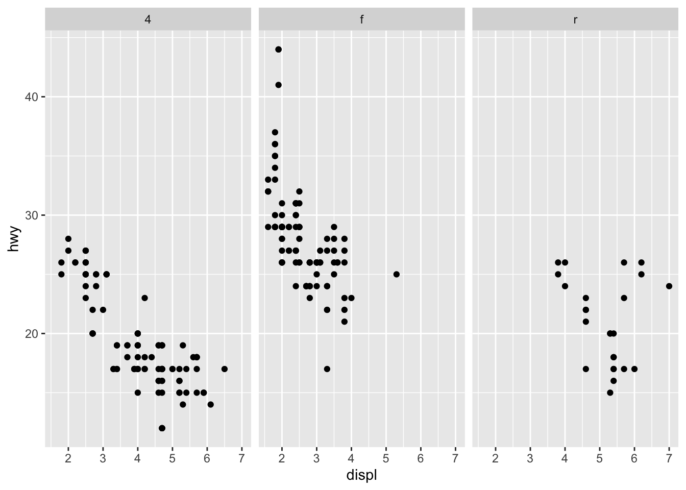

6 Zobrazovanie dát
Vhodné zobrazenie dát je tak trochu umenie. Treba nájsť vhodný typ grafu, farieb, písiem na plynulé odkomunikovanie myšlienky. Čo umenie nie je, je urobiť zlú vizualizáciu.
6.1 Zlé vizualizácie
Pri nasledujúcich obrázkov nebude príliš ťažké pochopiť, v čom sú problematické. V niektorých prípadoch ide o subjektívne hodnotenie.
Častokrát proporcie nie sú zachované. Toto môže byť použité ako manipulatívna stratégia na demonštrovanie veľkého rastu.
Koláčové grafy sú notoricky problematické a snažíme sa im vyhýbať, najmä ak je kategórií viacej a proporcie sú náročné na porovnávanie. Špeciálne zlé sú vždy a všade 3D koláčové grafy. Tie nesmierne skresľujú porovnávanie.
Trojrozmerné alebo aj dvojrozmerné piktogramy sú problematické tiež. Ak je ich úlohou oživiť prezentáciu, tomu sa dá porozumieť. Vyhýbame sa aj 3D prvkom.
Niekedy sú vizualizácie zlé lebo sú necitlivé, ako v týchto dvoch prípadoch.
.
Niekedy príliš kreatívna ba priam manipulatívna transformácia vertikálnej osi chce pomôcť niečo odkomunikovať (napríklad nie príliš prudký nárast).
6.2 Dobré vizualizácie
Dobrá vizualizácia je ako Rembrandtova kresba. Zaujme, odomunikuje emóciu, príbeh, vzbudí záujem a núti klásť otázky.
Pozrime sa na nasledovný obrázok.
Okamžite si všimneme dominantné postavenie písmena n na pravej strane. Ktoré sú to tie krstné mená, ktoré končia na n? Prečo sa distribúcia tak zmenila? Človek má chuť okamžite hľadať, ktoré sú to mená(?) (John, Brandon, Ryan, Jonathan, Christian, Austin, Dylan, Ethan, Benjamin…). Tak či onak, tento obrázok je úspešný v tom, že zaujme.
Všimnime si vzťah medzi výdavkami na zdravotnú starostlivosť a očaká vanou dĺžkou života.
Zvýraznené dve krajiny - USA a Mexiko sú susedné. Je okamžite zreteľné, že USA sú veľmi iné ako ostatné ekonomicky rozvinuté štáty. Namiesto sledovania čísel v tabuľkách máme túto informáciu okamžite.
Podobným príkladom, z ktorého vyvstáva mnoho otázok je tento:
USA je ohromne iná krajina, čo sa týka zbraní. Veľmi veľmi iná. Grafické zobrazenie nám umožní tento rozdiel “pocítiť”, tým, že vidíme vzdialenosti. Porovnáme si najextrémnejšie protipóly v ostatku sveta - Filipíny a India. Vidíme ako sú vzdialené Rusko a Čína. Žiadne z týchto rozdielov ani zďaleka neobsiahnu rozdiel medzi USA a zvyškom sveta.
6.3 Vizualizácia v Rku: ggplot2 knižnica
Knižnica ggplot2 je veľmi populárnym spôsobom na vytváranie vizualizácií. Má vnútornú logiku: každý objekt sa skladá z vrstiev, ktoré majú určité atribúty. Názov ggplot2 pochádza z “Grammar of Graphics”.
6.3.1 Zobrazenie závislosti dvoch premenných
Začnime príkladom, zobrazme si spotrebu aút (dataset mpg z knižnice ggplot2), konkrétne vzťah medzi diaľničným dojazdom v míľach hwy oproti objemu motora v litroch displ.
library(ggplot2)
ggplot(data = mpg) +
geom_point(mapping = aes(x = displ, y = hwy))
Tento príkaz inicializuje grafické okno, dáta, teda parameter data vstupujú vo formáte data.frame. Funkcia geom_point() zobrazuje jednu vrstvu, konkrétne body. Táto potrebuje
data- tie sú už zadefinované globálne v rámci grafického oknaggplotmapping- musíme vedieť, ktoré premenné majú byť na osiach. Hodnotaaes(x = displ, y = hwy)nastaví horizontálnu os na premennúdispla vertikálnu os nahwy
V datasete máme informáciu aj o tom, v akej triede je auto (class). Túto informáciu môžeme zobraziť rôznymi spôsobmi: napríklad nastavením
- farby (
color) - priesvitnosti (
alpha) - tvaru (
shape)
bodov.
Rovnaký výsledok dostaneme aj pomocou použitia pipeline-u %>% z knižnice dplyr. Knižnica tidyverse rovno načíta ggplot2 aj dplyr.
library(tidyverse)
mpg %>%
ggplot() +
geom_point(mapping = aes(x = displ, y = hwy))Grafické parametre môžeme nastaviť aj nezávisle od hodnôt nejakej premennej. Tieto parametre sú nastavené špecificky pre vrstvu geom_point. Nižšie je príklad keď je skombinovaná jedna vrstva s druhou. V druhej vrstve je vybraný iný parameter data, konkrétne len tie autá, ktoré majú 4 valce. Pre viacero príkladov stačí keď do konzoly zadáte vignette("ggplot2-specs").
library(tidyverse)── Attaching core tidyverse packages ──────────────────────── tidyverse 2.0.0 ──
✔ dplyr 1.1.4 ✔ readr 2.1.5
✔ forcats 1.0.0 ✔ stringr 1.5.1
✔ lubridate 1.9.3 ✔ tibble 3.2.1
✔ purrr 1.0.2 ✔ tidyr 1.3.1
── Conflicts ────────────────────────────────────────── tidyverse_conflicts() ──
✖ dplyr::filter() masks stats::filter()
✖ dplyr::lag() masks stats::lag()
ℹ Use the conflicted package (<http://conflicted.r-lib.org/>) to force all conflicts to become errorslibrary(cowplot)
Attaching package: 'cowplot'
The following object is masked from 'package:lubridate':
stampg1 <- ggplot(data = mpg) +
geom_point(mapping = aes(x = displ, y = hwy, color = class))
g2 <- ggplot(data = mpg) +
geom_point(mapping = aes(x = displ, y = hwy, alpha = class))
g3 <- ggplot(data = mpg) +
geom_point(mapping = aes(x = displ, y = hwy, shape = class))
g4 <- ggplot(data = mpg) +
geom_point(mapping = aes(x = displ, y = hwy),
color = "blue", alpha = 0.5, shape = 2) +
geom_point(data = mpg %>% filter(cyl == 4),
mapping = aes(x = displ, y = hwy),
color = "red", alpha = 0.3, shape = 1,
size = 4)
plot_grid(g1, g2, g3, g4, ncol = 2, labels = "AUTO")Môžeme sa pozerať na závislosť premenných hwy a displ pre rôzne kombinácie typu pohonu drv (predný, zadný, 4x4) a počet valcov cyl.
ggplot(data = mpg) +
geom_point(mapping = aes(x = displ, y = hwy)) +
facet_grid(~drv)
ggplot(data = mpg) +
geom_point(mapping = aes(x = displ, y = hwy)) +
facet_grid(cyl ~ drv)Parametre data a mapping môžu ísť priamo do ggplot objektu, takže ich netreba separátne volať pre rôzne vrstvy. Tu je navyše vrstva geom_smooth, ktorá vyhladí dáta - preloźí nimi aproximačnú krivku.
ggplot(data = mpg, mapping = aes(x = displ, y = hwy)) +
geom_point() +
geom_smooth()`geom_smooth()` using method = 'loess' and formula = 'y ~ x'
Rko nás upozorní, ktorú vyhladzovaciu krivku použilo.
Nasledujúci kód uloží obrázok ako vo formáte pdf s danými veľkosťami.
`geom_smooth()` using method = 'loess' and formula = 'y ~ x'6.3.2 Zobrazenie distribúcie premennej
Vygenerujme si dáta, ktore budeme zobrazovať (inšpirované nasledovných odkazom).
set.seed(2930)
data_test <- data.frame(
school=factor(rep(c("8r_gym", "4r_gym"), each=40)),
score=round(c(rnorm(40, mean=75, sd=8), rnorm(40, mean=65, sd=5)))
)
ggplot(data = data_test, mapping = aes(x=score)) +
geom_histogram()`stat_bin()` using `bins = 30`. Pick better value with `binwidth`.Tu si skúsime ponastavovať rôzne vlastnosti vrstvy geom_histogram. Vertikálnu čiaru pridáme pomocou geom_vline a odhad hustoty cez geom_density.
g1 <- ggplot(data = data_test, mapping = aes(x=score)) +
geom_histogram(binwidth=1, color="black", fill="white")
g2 <- ggplot(data = data_test, mapping = aes(x=score)) +
geom_histogram() +
geom_vline(aes(xintercept=mean(score)),
color="blue", linetype="dashed", size=1)
g3 <- ggplot(data = data_test, mapping = aes(x=score)) +
geom_histogram(aes(y=..density..)) +
geom_density(alpha=.2, fill="red")
g4 <- ggplot(data = data_test, mapping = aes(x=score)) +
geom_histogram()
plot_grid(g1, g2, g3, g4, ncol = 2, labels = "AUTO")`stat_bin()` using `bins = 30`. Pick better value with `binwidth`.
`stat_bin()` using `bins = 30`. Pick better value with `binwidth`.
`stat_bin()` using `bins = 30`. Pick better value with `binwidth`.Pozrite sa na tento kód a zhodnoťte, čo robí ten ktorý príkaz.
library(dplyr)
mu <- data_test %>% group_by(school) %>% summarise(group_means = mean(score))
ggplot(data_test, aes(x=score, color=school, fill=school)) +
geom_histogram(aes(y=..density..), position="identity", alpha=0.5)+
geom_density(alpha=0.6)+
geom_vline(data=mu, aes(xintercept=group_means, color=school),
linetype="dashed")+
scale_color_manual(values=c("#999999", "#E69F00", "#56B4E9"))+
scale_fill_manual(values=c("#999999", "#E69F00", "#56B4E9"))+
labs(title="Score histogram",x="Score(points)", y = "Density")+
theme_classic() +
theme(legend.position="bottom")`stat_bin()` using `bins = 30`. Pick better value with `binwidth`.
Na zobrazovanie distribúcie je užitočný aj boxplot. Nasledujúce obrázky (inšpirované týmto odkazom) sú vytvorené pomocou vrstiev geom_boxplot, geom_dotplot a geom_jitter.
g1 <- ggplot(data = data_test, mapping = aes(x = school, y = score)) +
geom_boxplot()
g2 <- g1 +
geom_dotplot(binaxis='y', stackdir='center', dotsize=1)
g3 <- g1 +
geom_jitter(shape=16, position=position_jitter(0.1))
g4 <- ggplot(data = data_test, mapping = aes(x = school, y = score, color = school)) +
geom_boxplot() +
geom_jitter(shape=16, position=position_jitter(0.1))
g5 <- ggplot(data = data_test, mapping = aes(x = school, y = score, fill = school)) +
geom_boxplot() +
geom_jitter(shape=16, position=position_jitter(0.1))
g6 <- ggplot(data = data_test, mapping = aes(x = school, y = score, fill = school)) +
geom_boxplot() +
geom_jitter(shape=16, position=position_jitter(0.1)) +
scale_fill_grey() +
theme_classic()
plot_grid(g1, g2, g3, g4, g5, g6, ncol = 2, labels = "AUTO")Bin width defaults to 1/30 of the range of the data. Pick better value with
`binwidth`.6.4 Niektoré princípy
Individuálnym výstupom rozumieme na základe porovnávania podobných objektov.
Toto si vždy opakujeme, keď si nie sme nejakou voľbou istí. Toto je vynikajúca séria článkov od Lisy Charlotte Muth, odporúčam tiež prehľadový článok, knihu o prezentáciách a vizualizáciách od Jonathana Schwabisha.
- Zvoľte správny typ grafu.
- Sumárne štatistiky zavádzajú.
- Je užitočné zobraziť surové dáta.
- Dátový bod = jedna machuľa atramentu.
- Ďalšie machule pridávame len ak nám pomôžu pochopiť niečo nové.
- Využite moment prekvapenia vo svoj prospech.
- Zvýraznite dôležité elementy grafu. Napríklad ten najdôležitejší dátový bod alebo podskupinu. Označovať môžete priamo v grafe aj textom.
- Zjednodušujte. Vynechajte nepotrebné grafické elementy, menej je niekedy viacej.
- Graf by mal byť samovysvetľujúci, na jeho základné pochopenie by malo stačiť pozrieť sa na graf a príslušný popis.
- Označenie osí musí byť zrozumiteľné. Prispôsobte tomu veľkosť a typ písma. V počítačovej podobe preferujeme písmo bez pätiek. V tlačenej podobne naopak pätkové písmo. Čísla sa lepšie porovnávajú ak sú tabulované (majú rovnakú šírku) a liniovité (majú rovnakú výšku).
- Farebné elementy lepšie vyniknú na sivom alebo (ako čistobielom) podklade. Bezpečnou voľbou na podklad je tiež teplá, veľmi svetlá a málo saturovaná farba. Farby sa zväčša používajú na vysvetľovanú premennú, nie na prediktory. Volíme menej farieb ak sa to dá, napríklad spojených niektorých kategórií a ideálne volíme farebnú škálu zrozumiteľnú aj pre čiastočne farboslepých. Farbám sa môžeme vyhnúť aj tak, že skupiny odlíšime symbolmi, vzormi alebo typom čiary. Rôzne mediá, inštitúcie alebo spoločnosti používajú fixné farebné palety aby bola prezentácia farebne jednotná.
- V prípade rôznych názorov je užitočné hľadať konsenzus v tíme.
Individuálnym výstupom rozumieme na základe porovnávania podobných objektov.
Na tomto linku nájdete tiež časť Bc. práce Daniely Rušinovej, ktorá spracovala tému vizualizácie do prístupnej webstránky s mnohými príkladmi.
Ku každému príkladu je tiež R-kód.
6.5 Cvičenia
Exercise 6.1 Použite túto náhodnú podvzorku filmov z knižnice ggplot2movies.
library(ggplot2movies)
library(eatATA)
set.seed(224)
vars <- c("year","length","budget","rating","votes")
catVars <- names(movies)[18:23]
ind <- which(rowSums(movies[,18:23])==1)
ind2 <- sample(ind,1000)
data_sam <- movies[ind2,c(vars, catVars)]
data_sam <- dummiesToFactor(data_sam, catVars, facVar = "category")
data_sam <- data_sam %>% mutate(era = as.factor(50*floor(data_sam$year/50)))
levels(data_sam$era) <- c("1850-1899", "1900-1949", "1950-1999", "2000-")Čo presne sme tu urobili?
Teraz zreprodukujte tieto grafy:
`stat_bin()` using `bins = 30`. Pick better value with `binwidth`.
Bin width defaults to 1/30 of the range of the data. Pick better value with
`binwidth`.(Pri poslednom grafe potrebujete vytvoriť novú premennú.)
6.6 Bonus
Dáta vedia rozprávať príbehy. Je dôležité pozerať sa na dáta z rôznych strán, uhlov, aby sme pochopili do hĺbky všetky skryté súvislosti v ich plnej rozmanitosti.